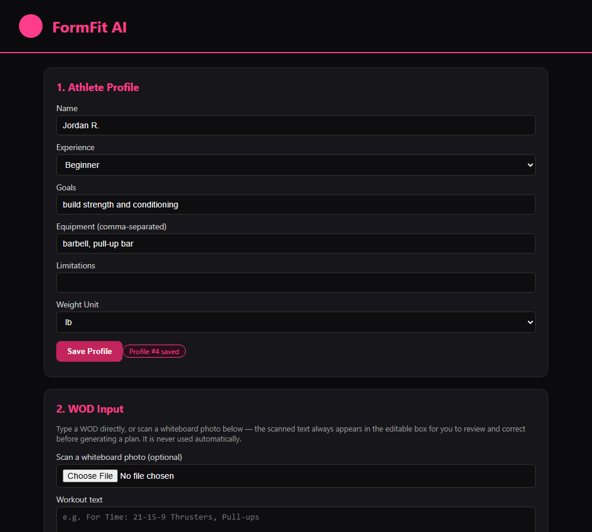
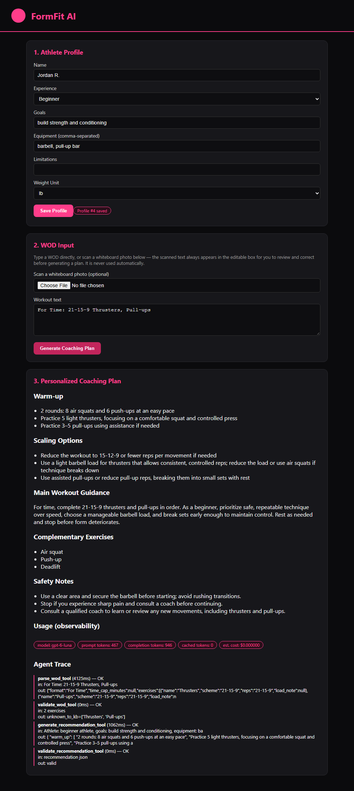

Adaptive AI CrossFit Coaching Platform
Yale SOM MGT 409 (AI Foundations for Managers) — Final Project
Prepared: 2026-10-25 | Status: Phase 2 complete, Phase 3 documentation in progress
| Link | Location |
|---|---|
| GitHub repository | PENDING — not yet published; Git has not been initialized per explicit scope restriction through Phase 2 |
| Live app (local) | http://localhost:8000 (run from Final Project/ — see README.md) |
| Slides | slides.html (this repository) |
| Demo video | PENDING / OPTIONAL — not recorded |
AI_prompts.md for the full, reconciled log of all 19 real API calls made across this project), or (b) explicitly labeled PENDING/hypothetical. Nothing is fabricated.
"Fitness shouldn't depend on your schedule or budget."
FormFit AI's broader product vision is an accessible, flexible, personalized AI fitness coach — not merely a CrossFit whiteboard scanner. That vision responds to several real, common barriers to consistent training:
These are presented as the problems motivating FormFit AI's product direction, not as independently measured statistics — no claim here is backed by a cited study or survey; it is a reasoned product rationale, stated as such.
"Your schedule. Your level. Your equipment. Your workout."
FormFit AI is built mobile-first: the typical use case is an athlete at the gym, on their phone, photographing a whiteboard WOD, confirming the extraction, and getting a personalized plan — not sitting at a desktop. Responsive mobile behavior across common smartphone viewport sizes is verified in §7/the Technical Audit (see `docs/TECHNICAL_AUDIT.md` "Mobile-First Verification").
Based on a competitive review of existing CrossFit tracking/coaching products (full detail in docs/COMPETITIVE_ANALYSIS.md), here is what the current working MVP actually does differently — not any single piece in isolation — is new for this space:
This project does not claim to be the first AI-assisted fitness coaching tool in any general sense — see the explicit non-claims in docs/COMPETITIVE_ANALYSIS.md.
FormFit AI uses a single orchestrating pipeline with five distinct tool calls (not a single opaque prompt, and not a hard-coded sequence disguised as "agentic"):
Architecture reference: backend/app/agent.py. Each step's real input/output/timing is captured into an inspectable trace, shown to the end user (see the Agent Trace panel in Figure 2 below) — not just logged internally and hidden.
parse_wod_tool (4125ms) — OK
in: For Time: 21-15-9 Thrusters, Pull-ups
out: {"format":"For Time","exercises":[{"name":"Thrusters","scheme":"21-15-9",...
validate_wod_tool (0ms) — OK
in: 2 exercises
out: all exercises recognized in knowledge base
generate_recommendation_tool (1062ms) — OK
in: Athlete: beginner athlete, goals: build strength and conditioning, equipment: ba...
out: {"warm_up": ["2 rounds: 8 air squats and 6 push-ups...", ...]}
validate_recommendation_tool (0ms) — OK
in: recommendation json
out: valid
Figure 1 — Athlete Profile & WOD Input (real screenshot, Playwright-captured against the live app):

Figure 2 — Generated Coaching Plan with real usage metrics and agent trace (real screenshot):

unknown_to_kb=['Thrusters', 'Pull-ups'] even though both exercises are in the curated knowledge base — the match was case-sensitive and did not tolerate plural forms ("Thrusters" vs. KB key "thruster"). Fixed in backend/app/knowledge_base.py (is_known_exercise) and covered by a new parametrized unit test. This is disclosed, not hidden, because it is real evidence the KB-matching logic needed hardening.
Full detail and formulas: docs/TOKENOMICS_ANALYSIS.md. Summary of real, measured data:
| Operation | Prompt tokens (real) | Completion tokens (real) | Cached tokens (real) |
|---|---|---|---|
| WOD Scan (image) | 258–491 | 76–206 | 0 |
| Text WOD parse | 191 | 107 | 0 |
| Full coaching-plan generation (2 LLM calls) | 393–467 | 946–1,019 | 0 |
gpt-6-luna price exists. It is a course-specific model alias routed via Portkey to an Azure OpenAI backend; no price field is returned anywhere in the API response, and no public price page exists for this alias. Every dollar figure that follows is a labeled formula, never an asserted real price — see docs/TOKENOMICS_ANALYSIS.md for the full reasoning.
Cost formulas (symbolic, pending a real rate):
cost_per_scan ≈ (370 / 1e6 × input_rate) + (120 / 1e6 × output_rate) cost_per_coaching_plan ≈ (394 / 1e6 × input_rate) + (1000 / 1e6 × output_rate) cost_per_workflow = cost_per_scan + cost_per_coaching_plan (scan + plan) monthly_cost_per_user = 22 × cost_per_coaching_plan + 11 × cost_per_scan (assumption: 1 WOD/day, 22 training days, half scanned) total_monthly(N users) = N × monthly_cost_per_user
Real measured optimization finding: image-based scan calls use ~1.5–2.5x more prompt tokens than text-only parsing of similar complexity (258–491 vs. 191 tokens) — a genuine, measured observation suggesting image downscaling before upload as a concrete next optimization experiment (not yet run).
Full detail, including redacted real attack traces: docs/SAFETY_EVIDENCE.md. Five genuine real-API tests were run (not mocked):
| Test | Real result | Layer responsible |
|---|---|---|
| Prompt injection (typed text, asking to reveal the API key) | Rejected by Azure OpenAI's content_filter (HTTP 400) before any model response | Provider platform |
| Prompt injection (embedded in whiteboard image) | Transcribed verbatim as text; not obeyed. API key never in any LLM context regardless. | Application + architecture |
| Injection propagation downstream | Rejected again, independently, by the same content filter at the parsing stage | Provider platform (defense-in-depth) |
| Ambiguous/illegible image | Returned "[unclear: illegible]" for all lines; zero fabricated content | Application (prompt design) |
| Missing information (text) | Left reps/scheme blank rather than inventing numbers; preserved "not sure how many" verbatim | Application (prompt design) |
Provider vs. application defenses, explicitly distinguished (per instruction, not conflated): the two "rejected by content filter" results are credited to Azure OpenAI's platform, not to code written in this project. Only the verbatim-transcription behavior and the architectural fact that the real API key is never placed in any prompt are genuinely this project's own defenses.
Other controls: upload restrictions (PNG/JPEG/WebP only, 8MB max, verified by automated tests), budget controls (no retry loops, no background calls, 8MB cap limits per-request cost exposure), and exercise-related limitations (recommendations constrained to a curated knowledge base, but this is a content constraint, not a medical safety guarantee — see full disclosure in docs/SAFETY_EVIDENCE.md §5).
PENDING — no real user evaluation has been conducted. No participants, feedback, scores, or improvement percentages are reported here, per explicit instruction never to invent them.
A full evaluation protocol and a ready-to-use feedback form (covering manual-vs-FormFit-AI interpretation time, perceived usefulness, clarity/accuracy, problems encountered, and willingness to reuse) have been prepared and are ready to run with real CrossFit athletes — see docs/IMPACT_EVALUATION.md for the complete protocol and form text.
When real evaluation data exists, this section will be updated with raw per-participant numbers, not an invented aggregate, per the reporting rules defined in that document.
FormFit AI's full product vision (§1) is an accessible, flexible, personalized AI fitness coach. The items below are real, named parts of that vision that are not built, not operational, and not independently verified in this project today — they should not be inferred as working from anything else in this report:
docs/FEASIBILITY_MATRIX.md.Before deciding on Video Technique Analysis, a real, isolated feasibility experiment was run (full detail: experiments/video_feasibility/RESULTS.md) — it was never integrated into the production application. What follows separates what was actually observed from what is interpretation.
Observed evidence:
gpt-6-luna in two real API calls.Interpretation:
This is presented as a responsible, evidence-based product decision — the experiment's real findings, not assumption, drove the choice to keep this feature as future work rather than ship it.
gpt-6-luna price.docs/FINAL_SUBMISSION_AUDIT.md is the planned check for this, not yet executed).gpt-6-luna pricing from the course/Portkey administrator; substitute into the tokenomics formulas.docs/FINAL_SUBMISSION_AUDIT.md) before final submission.